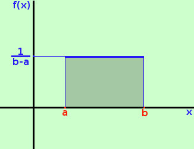
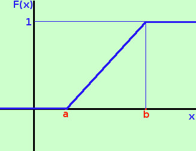
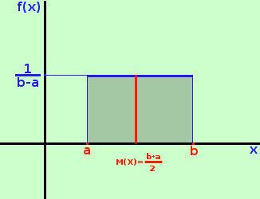

|
Piu' che un'effettiva probabilita' si tratta di una probabilita' "didattica" o meglio di un tipo di probabilita' che ci permette di capire meglio tutto l'impianto Consideriamo la variabile casuale X che assume tutti i valori nell'intervallo [a;b] con funzione densita' f(x) = k Essendo la probabilita' totale su [a;b] uguale ad 1 possiamo trovare il valore di k impostando l'equazione ∫ab kdx = 1 l'integrale e' immediato e otteniamo  | kx |ab = 1 risolvendo kb - ka = 1 raccolgo k k(b-a) = 1
Otterremo la funzione di ripartizione calcolando l'integrale da a ad x della funzione densita' 
quindi abbiamo la funzione di ripartizione
a destra la sua rappresentazione grafica  Calcoliamo ora il valore medio
Calcoliamo ancora la varianza Prima calcolo il valore medio del quadrato della variabile aleatoria
Adesso, per trovare la varianza da questo valore sottraggo il quadrato del valore medio
Infine calcoliamo lo scarto quadratico medio Basta applicare la radice al risultato precedente
| .
||||||||||||||||||||||||||||||||||||||||||||||||||||||||||||||

|

|

|

|